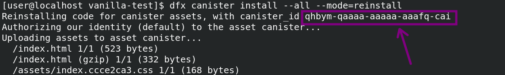

Getting Started
Requirements
Install the beta version of the DFINITY Canister SDK
DFX_VERSION=0.7.0-beta.8 sh -ci "$(curl -fsSL https://sdk.dfinity.org/install.sh)"
Get Started
With NPM:
npx create-ic-app

After the setup is done
cd test-project
npm install
Start the backend
dfx start --background
dfx canister create --all
dfx build
dfx canister install --all
Start the frontend
npm run dev
Thats it! The counter demo is persisted on your local Internet Computer.

[Experimental] Watch mode for canisters
This will auto build and install your canisters whenever you make a change to them
npm run watch

Adding / Removing / Renaming Canisters
You will have to edit 3 files:
- dfx.json
- tsconfig.json
- src/agent.ts
More detailed instructions later. For now see how it's done in those files for the example counter canister.
Deploying Asset Canister
Run the following commands
dfx build
dfx canister install --all --mode=reinstall
Then grab the asset canister ID from the output. Shown here: 
Now you can visit the following url in your browser to see it running on your local internet computer:
http://localhost:8000?canisterId=<CopiedCanisterId>
Community templates / Contributions
Want to contribute your own template? Find something that could be improved? Repo is open for PRs! Happy to assist you in this. You'll receive full credit for your contribution of course.
Contributions
@ferMartz (React JS + Tailwind template)